Review: The OSI Model Foundation
Layer 1 = The Foundation
The fanciest software can’t send data through a broken cable.
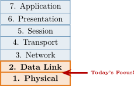
Review: Why Physical Infrastructure Matters
Three main options for transmitting bits:
Module 1 Recap
Today’s Goal
Learn which cables to use and when—and how to install and troubleshoot them.
After completing this module, you will be able to:
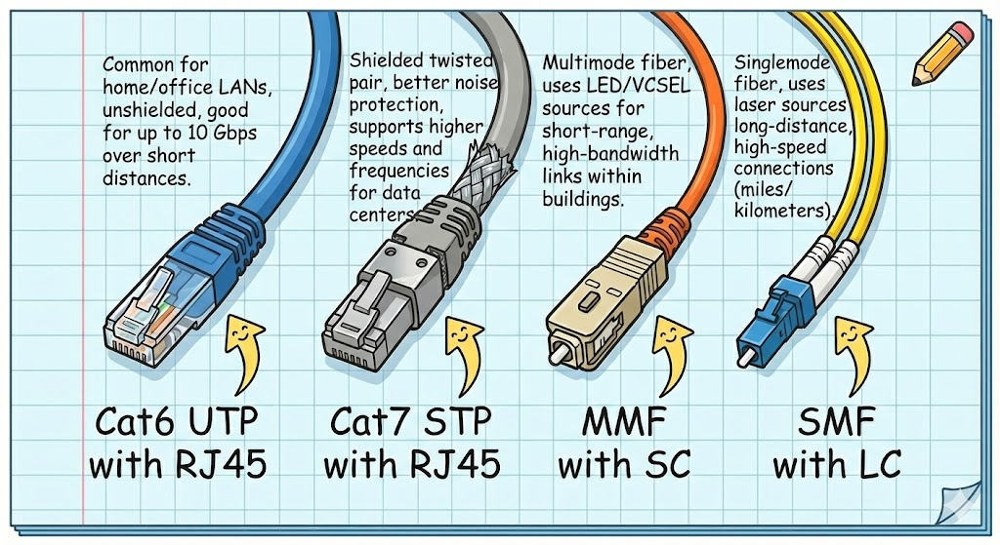
The physical layer (OSI Layer 1) is where all network communication begins. Understanding how data travels through cables, the difference between half-duplex and full-duplex transmission, and how Ethernet has evolved prepares us for selecting and installing the right cabling infrastructure. This section lays the technical foundation for everything that follows.
Data at the physical layer travels as electrical signals on copper cables or light pulses through fiber. These physical signals are derived from the binary (1s and 0s) representation used by all computers and networking devices.
How Does Data Travel on a Wire?
Analogy
Think of Morse code with a flashlight: on = 1, off = 0. Now imagine doing that billions of times per second!
Key Point
Ethernet uses baseband: one conversation at a time per cable.
Duplex communication describes how devices send and receive data simultaneously. The difference between half-duplex and full-duplex modes affects network efficiency dramatically, which is why modern switches enforce full-duplex.
Half-Duplex
The half-duplex diagram (left) shows two PCs connected with an OR operation, representing that only one can transmit at a time. Signals cannot travel in both directions simultaneously without collision.
Full-Duplex
The full-duplex diagram (right) shows the same two PCs with an AND operation, representing that both can transmit simultaneously in different directions without interference, effectively doubling network bandwidth.
Why This Matters
A 1 Gbps connection in full-duplex can send AND receive 1 Gbps simultaneously—twice the effective bandwidth of half-duplex!
Ethernet standards define how networks operate at the physical layer. Understanding how to read standard names and their implications for cable selection is essential for proper network design.
Ethernet Standards: Reading the Code
Common Suffixes
T/TX = Twisted pair copper SX = Short-range fiber LX = Long-range fiber SR/LR = Short/Long reach (10G+)
Practice Reading
1000BASE-T = ? 1000 Mbps, baseband, twisted pair [0.3em] 10GBASE-SR = ? 10 Gbps, baseband, short-range fiber
Collisions were a fundamental problem in early Ethernet that limited network efficiency. Understanding how hubs and switches differ in managing collision domains explains why modern networks use switches exclusively.
Collisions: A Problem We Solved
Analogy
Hub = one conversation in a crowded room (everyone talks over each other). Switch = private phone lines for everyone.
The comparison shows the fundamental difference between hubs and switches. A hub (left) creates one shared collision domain where all devices compete for transmission time, limiting network efficiency. A switch (right) creates separate collision domains for each port, enabling simultaneous communication and eliminating collisions. This is why switches completely replaced hubs in modern networks.
Ethernet technology has evolved dramatically over four decades, with each speed increase requiring better cables and equipment. This evolution continues today as networks push toward 100 Gbps and beyond.
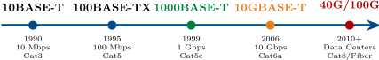
The Ethernet timeline shows the 35-year progression from 10BASE-T (1990) through Gigabit Ethernet (now standard) to emerging 100 Gbps technologies. Each generation requires better cables: Cat3 to Cat5 to Cat5e to Cat6a. This pattern shows why choosing quality cabling today prepares networks for tomorrow’s upgrades.
Today’s Standard
Gigabit Ethernet (1000BASE-T) is the default for most offices and homes.
Legacy Alert
If you see 10 or 100 Mbps, the network likely needs an upgrade!
Why Do Faster Speeds Need Better Cables?
Higher frequencies (more bits/second) are more vulnerable to:
The Bottom Line
You can’t run 10 Gbps on old Cat5 cable—the signal degrades too much!
The signal quality comparison shows how good cables maintain clean, distinguishable voltage transitions (top graph), while poor cables introduce noise and signal degradation (bottom), making it difficult for receivers to correctly interpret bits. This is why higher speeds require better cables.
Cable Categories
Higher Cat numbers mean cables built to stricter specs for faster speeds.
| Standard | Speed | Cable | Max Distance | Common Use |
| 100BASE-TX | 100 Mbps | Cat5 | 100 m | Legacy networks |
| 1000BASE-T | 1 Gbps | Cat5e | 100 m | Office standard |
| 10GBASE-T | 10 Gbps | Cat6a | 100 m | High performance |
| 1000BASE-SX | 1 Gbps | MMF | 550 m | Building backbone |
| 1000BASE-LX | 1 Gbps | SMF | 5 km | Campus links |
| 10GBASE-SR | 10 Gbps | MMF | 400 m | Data center |
| 10GBASE-LR | 10 Gbps | SMF | 10 km | Long-distance |
Copper (Top Section)
Best for: Short runs inside buildings. Limited to 100 meters maximum.
Fiber (Bottom Section)
Best for: Long distances, between buildings, high-interference areas.
Rule of Thumb
For new installations: Cat6 minimum (future-proofs for 10G at shorter distances), Cat6a if budget allows.
Case Study: The Addams Mansion Network
Case Study: The Addams Mansion Network
Gomez Addams wants to upgrade the mansion’s aging network. Currently, the
network uses old 100 Mbps switches, and Wednesday complains that her
downloads are painfully slow.
Lurch inspects the wiring closet and reports:
Gomez asks: “How fast can we go without replacing all the cables?”
Review Questions
What is the maximum speed Cat5e cabling can support?
Is the 80-meter cable run within acceptable limits?
What would the Addams family need to change to achieve 10 Gbps?
Case Study Solution: The Addams Mansion Network
Solution: The Addams Mansion Network
Cat5e supports 1000BASE-T (1 Gbps)—that’s a 10x improvement over their current 100 Mbps network!
Yes! Cat5e supports runs up to 100 meters, and 80 meters is well within spec.
For 10 Gbps (10GBASE-T), they would need:
Key Insight
Sometimes you only need new switches, not new cables! The Addams family can get 10x faster speeds just by upgrading their switches to Gigabit—the Cat5e cables they already have will work fine.
Copper cabling is the most common medium for local area networks because it is inexpensive, easy to install, and flexible. This section covers the different types of copper cables, their specifications, and how to select and install them according to industry standards.
Twisted pair cabling has been the foundation of telecommunications for over 140 years. The elegant simplicity of twisting wires together makes it remarkably effective at rejecting electromagnetic interference while remaining affordable and easy to work with.
Why Twisted Pair? The Science of Interference
Fun Fact
This technique was invented for telephone lines in the 1880s—it’s been protecting signals for over 140 years!
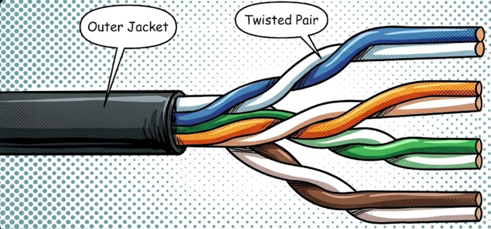
Why Twisting Works
Each wire in a pair picks up the same interference. The receiver compares the two signals and cancels out anything that’s identical—the noise disappears!
UTP is the default choice for virtually all modern LAN installations. Its balance of cost, flexibility, and performance makes it ideal for offices and homes, though it requires environmental consideration.
Advantages
Disadvantage
Susceptible to strong EMI—not ideal for factories or near heavy machinery.
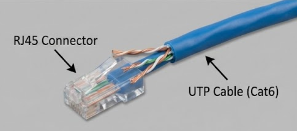
The 4 Pairs
| — | Orange pair |
| — | Green pair |
| — | Blue pair |
| — | Brown pair |
Each pair has one solid and one striped wire.
STP adds shielding to protect against electromagnetic interference, making it necessary in harsh industrial environments. However, the additional cost and installation complexity limit its use to situations where EMI is a genuine concern.
Different shielding types exist:
Important: Grounding Required!
STP cables must be properly grounded. Ungrounded shielding actually becomes an antenna and makes interference worse!
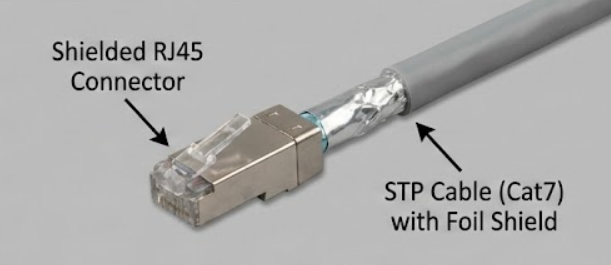
STP vs UTP
| UTP | STP | |
| Cost | $ | $$$ |
| Flexibility | High | Lower |
| EMI Protection | Good | Excellent |
| Installation | Easy | Harder |
Category ratings standardize cable specifications, allowing network designers to quickly assess whether a cable meets their speed and distance requirements. Understanding these ratings prevents costly mistakes in cabling installations.
Cat Ratings: What Do the Numbers Mean?
Each category specifies:
Analogy
Cat ratings are like car safety ratings. A 5-star car isn’t “better” in normal driving, but performs better in demanding situations.
Frequency Matters
Higher frequencies carry more data but are harder to transmit cleanly.
| Cat5e | 100 MHz |
| Cat6 | 250 MHz |
| Cat6a | 500 MHz |
| Cat7 | 600 MHz |
| Cat8 | 2000 MHz |
Pro Tip
Install one category higher than you need today—it’s cheaper than rewiring later!
| Category | Max Speed | Bandwidth | 10G Distance | Typical Use |
| Cat5 | 100 Mbps | 100 MHz | — | Obsolete |
| Cat5e | 1 Gbps | 100 MHz | — | Home, small office |
| Cat6 | 10 Gbps | 250 MHz | 55 m | Office standard |
| Cat6a | 10 Gbps | 500 MHz | 100 m | Recommended minimum |
| Cat7 | 10 Gbps | 600 MHz | 100 m | Specialized uses |
| Cat8 | 25–40 Gbps | 2000 MHz | 30 m | Data centers |
For New Installations
Cat6a is the sweet spot—supports full 10 Gbps at 100 meters and is reasonably priced.
Watch Out!
Cat6 only supports 10 Gbps up to 55 meters. Beyond that, it falls back to slower speeds.
The “e” and “a” Suffixes
The “e” in Cat5e means “enhanced.” The “a” in Cat6a means “augmented.” Both indicate improved versions of the base standard.
Common Mistake
Don’t confuse RJ-45 with RJ-11 (telephone)! RJ-11 is smaller with only 6 positions. Forcing the wrong connector damages ports.
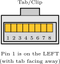
RJ-45 vs RJ-11
| RJ-45 | RJ-11 | |
| Positions | 8 | 6 |
| Contacts | 8 | 2–4 |
| Use | Ethernet | Phone/DSL |
| Width | Wider | Narrower |
Plenum and Riser Cable: Fire Safety Matters
Building Codes Are Serious
Using the wrong cable type can fail inspection, void insurance, and endanger lives. Always check local codes!
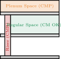
Cost Comparison
| CM (Standard) | $ |
| CMR (Riser) | $$ |
| CMP (Plenum) | $$$ |
Plenum costs 2–3x more, but it’s required by code.
Where you’ll still see it:
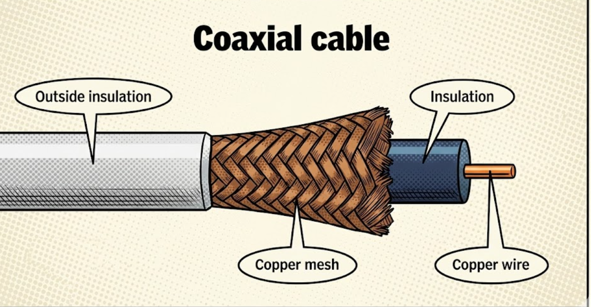
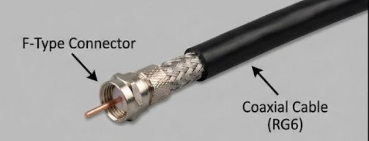
Twinaxial Cable and Direct Attach Copper (DAC)
Why Use DAC?
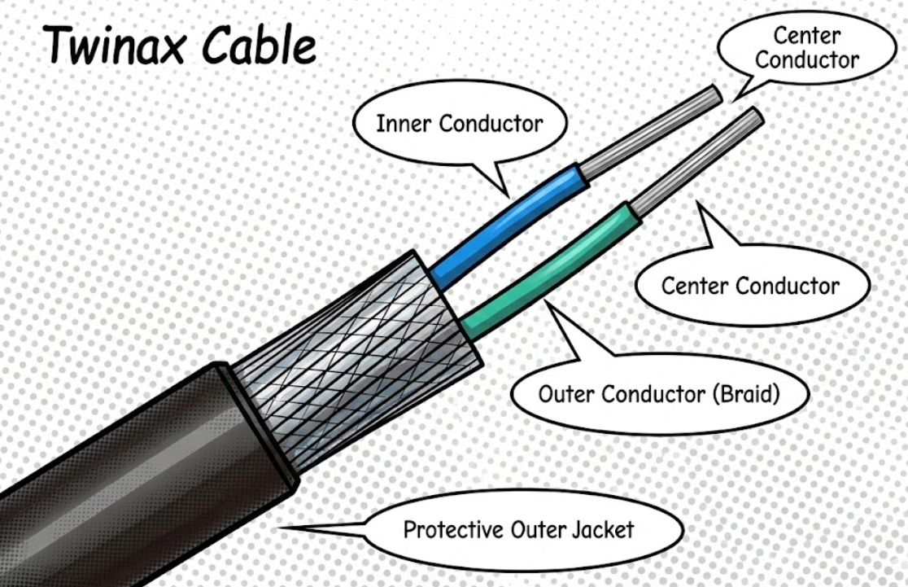
Common DAC Speeds
Case Study: Wiring the Addams Mansion Conservatory
Case Study: Wiring the Addams Mansion Conservatory
Morticia wants to add network connections to her conservatory (greenhouse)
where she tends her carnivorous plants. The network cables need to run through
the air handling space above the hallway ceiling.
Additionally, Gomez wants to connect the mansion’s old security cameras, which use RG-59 coaxial cable. Some camera runs are over 150 meters to cover the cemetery.
Uncle Fester offers to buy the cheapest cables he can find online.
Review Questions
What type of cable rating is required for the air handling space?
Why can’t Fester just buy the cheapest cable available?
Is RG-59 a good choice for the 150-meter camera runs? What would you recommend?
Case Study Solution: Wiring the Addams Mansion Conservatory
Solution: Wiring the Addams Mansion Conservatory
The air handling space requires plenum-rated (CMP) cable.
The cheap cables are likely standard CM/CMX rated:
RG-59 is NOT recommended for 150 meters—it’s designed for shorter runs and will have too much signal loss. Better options:
Key Lesson
“Cheap” cables can cost more in the long run: failed inspections, safety hazards, and poor performance. Always match the cable to the requirements!
Structured cabling provides the physical organization that keeps network infrastructure reliable and maintainable over time. This section covers standards, termination methods, and installation practices that prevent costly troubleshooting later.
Structured Cabling: Organizing the Chaos
Benefits
Easier troubleshooting, simpler moves/adds/changes, professional appearance, meets standards.
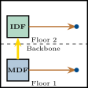
Key Terms
Backbone: MDF to IDF (often fiber) Horizontal: IDF to wall jacks (copper)
T568A and T568B Wiring Standards
Critical Rule
Use the same standard on both ends of a cable! Mixing creates a crossover cable (usually not what you want).
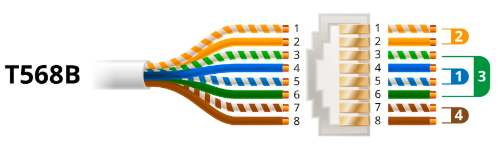
T568B (Most Common)
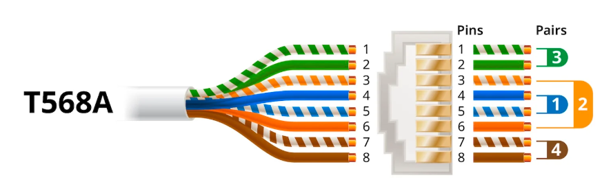
T568A (Government Standard)
Straight-Through vs Crossover Cables
Straight-Through Cable
Crossover Cable
Good News: Auto-MDI-X
Most modern switches and NICs have Auto-MDI-X—they automatically detect and adapt to either cable type. Crossover cables are becoming obsolete!
Patch panels represent the interface between permanent cabling and temporary connections. This separation makes modern networks flexible—you can moves, adds, and changes without disturbing the underlying infrastructure.
Why Use Patch Panels?
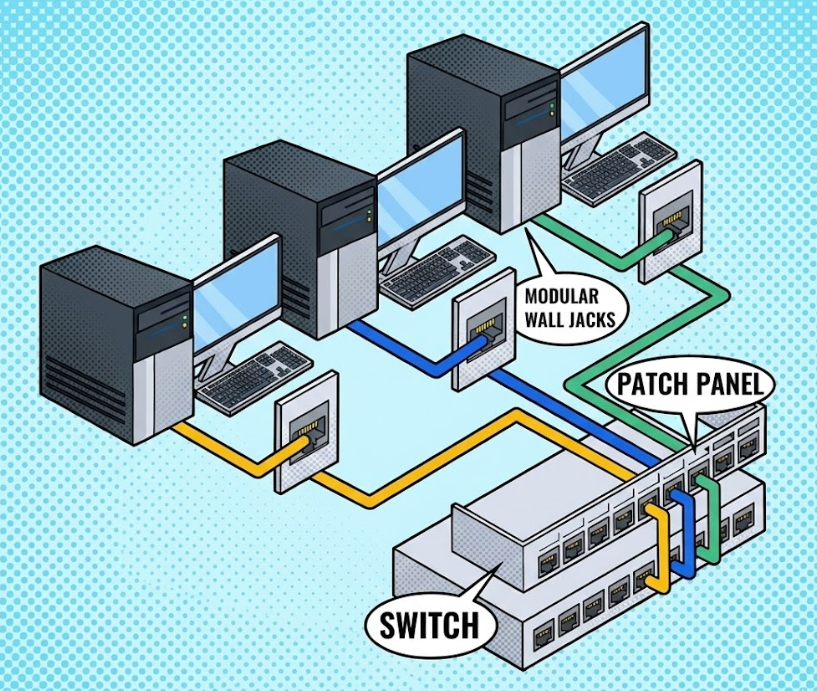
Crimping Tool
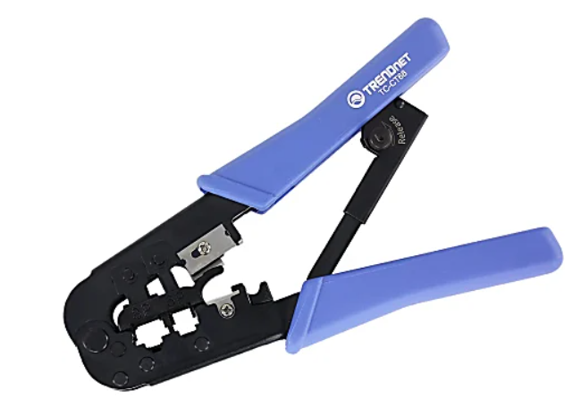
Punchdown Tool
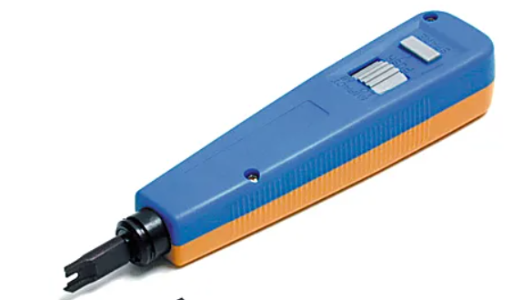
Proper cable installation requires attention to bend radius, environmental considerations, and safety codes. These practices prevent signal degradation, physical damage, and safety hazards that could compromise your network for years to come.
Cable Installation Best Practices
Do This
Don’t Do This
The 90/10 Rule
Total cable path = 100 meters max. Permanent horizontal cabling ≤ 90m, patch cables ≤ 10m combined.
Fiber optic cabling uses light to transmit data at high speeds over long distances with excellent resistance to electromagnetic interference. In this section, we examine fiber construction, connector types, and practical deployment choices.
Trade-offs
More expensive, harder to terminate, requires special tools, more fragile than copper.
When to Choose Fiber
Fun Fact
Light in fiber travels at about 200,000 km/sec—fast enough to circle Earth 5 times per second!
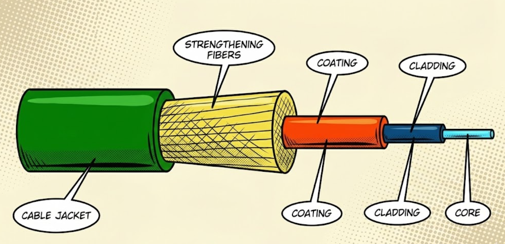
How Light Stays Inside
The cladding has a lower refractive index than the core. When light hits the boundary at a shallow angle, it bounces back—like skipping a stone on water.
Single-Mode vs Multimode Fiber
Multimode Fiber (MMF)
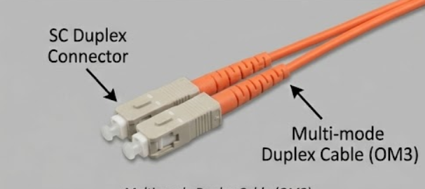
Single-Mode Fiber (SMF)
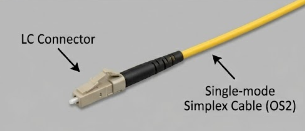
Quick Decision Guide
Inside a building? Use MMF—cheaper and sufficient. Between buildings? Use SMF—handles the distance.
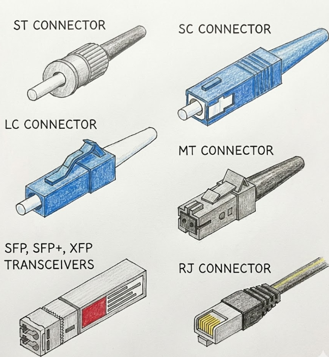
Most Common Today
LC connectors dominate new installations—small size fits more ports in the same space.
Fiber Splicing
Fiber Distribution Panel
Central termination point for fiber cables—similar to copper patch panels.
WDM: More Data, Same Fiber
Wavelength Division Multiplexing sends multiple signals on different colors (wavelengths) of light simultaneously.
Analogy
WDM is like sending red, blue, and green flashlight beams through the same fiber—each carries different data!
Case Study: Wednesday’s Cemetery Office
Case Study: Wednesday’s Cemetery Office
Wednesday is setting up a writing office in the cemetery gatehouse, which is 300
meters from the mansion. She needs a fast, reliable network connection for
uploading her novels.
Uncle Fester suggests running Cat6a cable underground through the old electrical conduits (which still have some active 240V lines for the crypt lighting).
Lurch suggests fiber optic cable instead.
Review Questions
Can Cat6a reach 300 meters? Why or why not?
What two advantages would fiber have in this scenario?
Should Wednesday use single-mode or multimode fiber?
Case Study Solution: Wednesday’s Cemetery Office
Solution: Wednesday’s Cemetery Office
No—Cat6a maximum distance is 100 meters. At 300 meters, the signal would be completely unusable (3x over the limit!).
Fiber advantages for this scenario:
Multimode (MMF) is the better choice:
Key Lesson
When copper can’t reach and EMI is present, fiber is the answer. Choose MMF for building-scale distances, SMF for campus or beyond.
Physical infrastructure design goes beyond cables. Rack layout, environmental controls, power systems, and fire protection all affect network uptime and safety.
Planning Considerations
Weight capacity, cable management, airflow (front-to-back), physical security, future expansion.
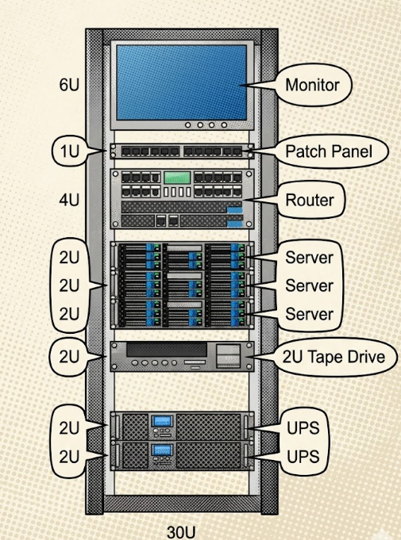
Common Sizes
1U: Switches, patch panels 2U: Larger switches, UPS 4U: Servers, storage
Environmental Factors: Temperature and Humidity
Temperature
Equipment generates significant heat—proper HVAC cooling is critical!
Humidity
Use environmental monitoring systems with alerts.
Hot Aisle / Cold Aisle
Data centers arrange racks so all equipment intakes face one aisle (cold) and exhausts face another (hot). This prevents hot air from recirculating into equipment.
UPS (Uninterruptible Power Supply)
PDU (Power Distribution Unit)
Other Power Considerations
Calculate Before Installing!
Add up all equipment power requirements (watts). Don’t overload circuits—leave 20% headroom.
Fire Extinguisher Classes
Use Class C (or ABC-rated) near network equipment!
Never Disable Fire Systems
Equipment is replaceable. Data can be backed up. Lives cannot be replaced.
Systematic cable testing helps identify and resolve physical-layer faults before they disrupt users. This section introduces practical troubleshooting workflows and the right tools for each problem type.
Signal Problems
Physical Problems
The #1 Cause of Problems
Bad terminations! Improperly crimped connectors or poorly punched patch panels cause most cable issues.
Signs of bad termination:
Basic Testers
Cable tester: Verifies all 8 wires are connected (continuity).
Wire map tester: Shows which pins connect to which—catches crossed pairs.
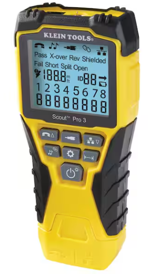
Tracing Tools
Tone generator & probe: Inject a tone at one end, trace the cable through walls with the probe.
Essential for finding unlabeled cables!
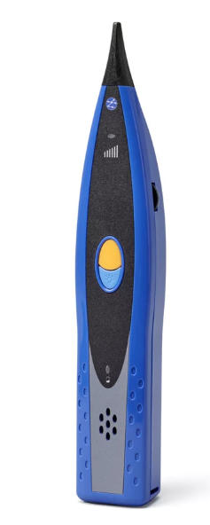
Limitation
Basic testers only check if wires connect—not how well. A cable can pass but still have performance problems.
Copper Testing
TDR (Time Domain Reflectometer):
Certification tester:
Fiber Testing
OTDR (Optical TDR):
Visual fault locator:
Case Study: Pugsley’s Flickering Connection
Case Study: Pugsley’s Flickering Connection
Pugsley’s computer keeps losing network connectivity intermittently. The link
light on his switch port flickers randomly.
Lurch investigates and finds:
Review Questions
If the cable passed continuity testing, what type of problem might this be?
What should Lurch inspect closely at the patch panel?
What tool would definitively identify the issue?
Case Study Solution: Pugsley’s Flickering Connection
Solution: Pugsley’s Flickering Connection
This is likely a bad termination. The wires make contact (passing continuity) but aren’t solidly connected—movement breaks the connection.
At the patch panel, Lurch should look for:
A certification tester would show marginal or failing results for crosstalk and return loss—problems a basic tester misses.
Quick Fix
Re-punch the cable at the patch panel. If that doesn’t work, re-terminate both ends. Termination problems are the most common cable issues!
Key Concepts:
Installation & Troubleshooting:
This module covered the Physical Layer infrastructure that forms the foundation of all network communication. You explored copper cabling (UTP, STP, coaxial, twinax), fiber optic cabling (MMF and SMF), structured cabling standards (T568A/B), connectors (RJ-45, LC, SC, ST), installation best practices, and troubleshooting techniques. Understanding these fundamentals is essential for network design, installation, and maintenance. In the next module, we’ll build on this foundation by exploring network interfaces, Ethernet frames, and Layer 2 switching.